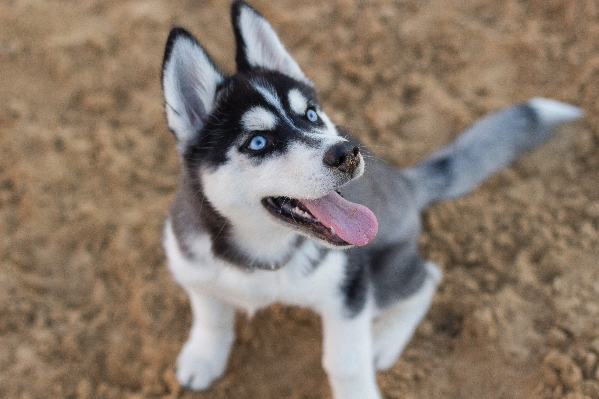

ORIGEN
Este perro fue creado por la tribu Chukchi como perro de trabajo para tirar de los trineos a traves de largas distancias durante sus partidas de caza sirviendo como transporte rapido para las presas de la vuelta al poblado.
CUIDADOS DIARIOS
El peso de esta raza en machos de 20 a 28kg, y en hembra de 15 a 20kg la altura es de 55 a 60cm en machos y en hembras es de 50 a 55 cm.
400 a 500 g diarios completamente seco.
Generalmente son perros que gozan de buena salud, viviendo entre diez y 14 años.
Los problemas de salud mas frecuentes que se hayan en la raza se encuentran: cataratas,glaucoma, atrofia..
Necesita de una buena dieta, calidad con altos niveles de proteinas y grasa, especialmente si van a ser usados para competiciones de trineos.
